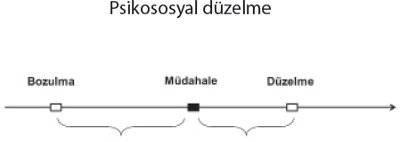

Süreç içinde, internet bağımlılığı anlayışı, onun tedavi gerektiren bir bozukluk olarak kabul edilmesi yönünde gelişti. İnternet bağımlılığını tedavi etmek için, dünyada birçok kurumda internet bağımlılığı servisleri açıldı. Hatta bazı tedavi merkezleri internet bağımlılarını yatırarak tedavi etmeye başlamış ve üniversite yerleşkelerinde internet bağımlısı olan öğrencilere yardım etmek için destek grupları kurmuştur. Psikiyatri bilim dalı, internet bağımlılığının tedavisi için yöntemlerin altyapısını oluşturmaya başladıysa da, terapi yaklaşımları ve sonuçları üzerinde deneysel olarak çok az çalışılmıştır.
İnternet ve bilgisayar bağımlılığında tedavi birçok güçlükler içerir. Çok hızlı gelişen bir teknolojiyle karşı karşıyayız. Bu nedenle bağımlılıkların tipi ve özellikleri de hızla değişmektedir. Bu değişimi yakalamak ve bilimsel bir analizle müdahaleye girişmek, bir klinisyen için oldukça zordur.
İnternet ve bilgisayar artık kullanımı zorunlu metalardır. Ancak bir insanın sigarayı kullanması zorunlu değildir. İnsan hiç sigara kullanmadan yaşamını sürdürebilir. Ama internet ve bilgisayar kullanmadan yaşamı sürdürmek giderek zorlaşmaktadır. Ev, okul ve işyerinde kullanımı yaygındır. Bağımlı olunan nesneden uzak kalmak, bağımlılık tedavilerinin önemli koşullarından birisidir. İnternet ve bilgisayar bağımlılığında ise bağımlı olunan nesneden kişiyi uzak tutabilmek mümkün değildir. Bu bir alkol bağımlısının meyhanede çalışmasına benzetilebilir.
Bu konuda çalışmalar yapan kişilerden birisi olan David Greenfield durumun zorluğunu "İnternet daha önce gördüklerimizden çok farklı. Sosyal iletişimi artıran ama aynı zamanda sosyal izolasyona neden olan bir araç" biçiminde açıklamıştır.
İnternet Bağımlılığının Tedavisinde Hedefler
İnternet kullanımına son vermek, bu bağımlılığı tedavi eder mi? Birçok kişi, internet bağımlılığını tedavi etmenin yolunun internet veya bilgisayar kullanımına son vermek olduğuna inanır. Ancak, "hep-hiç" şeklindeki yaklaşımın internet kullanımında pek yeri yoktur.
İnternet bağımlığı olgularında, bilgisayar hayatımızın her alanına girdiği için kaçınma davranışına odaklanan modeller pratik çözümler sunmaz. Yani "hiç internet kullanma" demenin gerçek hayatta mümkün olmadığını kabul etmek gerekir. Bu bağımlılıkta izlenmesi gereken yöntem yeme bozukluklarındakine benzer olmalıdır, yani kontrol etmektir. Bir kişi sigara içmeden yaşayabilir. Ona "hiç sigara içme" diyebiliriz. Ama bir yeme sorunu olan kişiye "hiç yemek yeme" diyemeyiz. Günümüzde de bilgisayar ve internetsiz yaşam çok zordur. Bireyler bilgisayar ve internetle karşılaşmak zorundadır.
İnternet bağımlığı olgularında, bilgisayar hayatımızın her alanına girdiği için kaçınma davranışına odaklanan modeller pratik çözümler sunmaz. "Kontrollü internet kullanımı" bağımlılığı tedavi etmek için en uygun yöntemdir.
Genel olarak internet bağımlılığını, bir dürtü kontrol bozukluğu olarak değerlendirilebiliriz. Bunlara örnek olarak kumar bağımlılığı ve saç yolma verilebilir. Buna uygun tedavi yöntemleri geliştirilmeye çalışılmıştır. Bir internet bağımlısının iyileşmek için şunları öğrenmesi gerekir:
• Düşüncelerini izlemeyi öğrenmelidir.
• Bağımlılığı tetikleyen duygu ve davranışı saptamalarını öğrenmelidir.
• Sorunlarla baş etme yöntemlerini öğrenmelidir.
• Eski hallerine dönmeyi engellemenin yollarını öğrenmelidir.
Tedavi Yöntemleri
Tedavide "bilişsel davranışçı terapi" yöntemleri kullanılabilir. Ayrıca danışan ile terapistin birlikte çalışarak tedavi planı oluşturduğu ve ulaşılabilir hedefler belirlediği "motivasyon kazandırma" teknikleri de çok başarılı olmaktadır. En iyi sonucun bu iki tedavi yönteminin bir kombinasyonunun sağladığı gözlenmektedir.
Bilişsel davranışçı terapi, düşüncelerin duyguları belirlediği önermesine dayanan bir tedavi biçimdir. Genelde 12 haftalık seanslar şeklinde 3 aylık bir tedavi süresini gerektirir. Tedavinin ilk basamakları davranışsaldır, belirli davranışlara ve dürtü kontrol bozukluğunun yol açtığı çeşitli durumlara odaklanır. Tedavi ilerledikçe, odak bu davranışı etkileyen düşünsel varsayımlara ve çarpıtmalara doğru ilerler.
Bilişsel davranışçı terapide hedefler şunlardır:
• İnternet kullanımıyla ilgili bilişsel çarpıtmaları açığa çıkarmak.
• Kişinin en kötü senaryoyu düşünmesini sağlamak.
• Bilişsel yeniden yapılandırma üzerinde çalışmak.
• İnternet kullanım zamanlarını kaydetmek.
• İnternet kullanımıyla ilgili düşünceleri listelemek.
• Maruz bırakma çalışması yürütmek (maruz bırakma, kişinin internete bağlı olmadığı zamanlarda kötü bir şey olmayacağını gözleyerek, çeşitli internet işlevlerine karşı bilişsel tepkilerini gözlemlemesini, kontrol etmesini sağlar ve kişiyi internetten bir süre uzak tutabilir).
İnternet bağımlılığı konusunda önemli çalışmalar yapan Davis 11 haftalık bir bilişsel davranışçı tedavi protokolü önermiştir. Davis'in önerdiği tedavide aşağıdaki adımların atılması gereklidir:
1. Kişinin internetten uzak kalıp kalamadığının tespiti.
2. Bilgisayarın yerinin değiştirilmesi ve diğer insanların bulunduğu yere nakli.
3. Diğer insanlarla beraber internete bağlanması.
4. İnternete bağlanma zamanını değiştirmesi.
5. İnternet defteri oluşturması.
6. Kişisel bilgisayar kullanımına son vermesi.
7. Arkadaşlarından ve yakınlarından internetle ilgili sorunları olduğunu saklamaması.
8. Spor aktivitelerine katılması.
9. İnternet tatillerinin verilmesi.
10. Otomatik düşüncelerin ele alınması.
11. Gevşeme egzersizleri.
12. İnternete bağlanma sırasında hissedilenlerin not edilmesi.
13. Yeni sosyal becerilerin kazandırılması.
Tedavide öncelikle bağımlıya düşüncelerini organize etmesini öğretmeyi, sonra da internet kötü kullanımını tetikleyen noktaları belirlemesi sağlanmalıdır.
Aile terapilerinin de internet bağımlılığı tedavisindeki yeri önemlidir. Güçlü bir aile desteği kişinin internet bağımlılığı sorununu aşmasına yardım edebilir. Aile terapisinde şu noktalara odaklanılmaktadır:
1. Ailenin internetin bağımlılık yapabileceği konusunda eğitilmesi.
2. Bağımlı kişinin davranışları nedeniyle suçlanmasını azaltma.
3. Kişiyi internet üzerinden psikolojik ihtiyaçlarını karşılamaya yöneltmiş olan daha öncesine ait ailevi çatışmaların açık bir şekilde konuşulabilmesini sağlama.
4. Aileyi bağımlı kişinin tedavisine (yeni hobiler edinmesi, uzun bir tatile çıkarılması, bağımlı kişinin duygularını dinleyebilme konusunda) yardımcı olmaları için cesaretlendirme (Arısoy, 2009).
Tedavide Kavramlar
Bilişler
Bağımlılar, internetin başından uzaklaştıkları zaman hiçbir mantıklı neden olmaksızın, bir felaket yaklaşıyormuş gibi kendilerini kaygılı hissederler. İnternet kullanımı gerçek veya algılanan sorunları engellemek için bir çeşit kaçıştır. Bu bilişlerle çalışılması tedavide önemli bir yer tutar.
Davranış
Davranışsal terapi, tedavinin hem bilgisayarla ilgili hem de bilgisayar dışındaki davranışı düzenleme kısmında kullanılır. Bilgisayar kullanımı süresindeki davranışı düzenleme, bilgisayarın meşru amaçlarla kontrollü kullanımını desteklerken, sorun yaratan uygulamalardan kaçınmayı hedefler. Örneğin, pornografi bağımlısı bir avukat, interneti araştırma yapmak veya müvekkilleriyle yazışmak için kullanmaya devam ederken, pornografiyle ilgili sitelerden kaçınmayı öğrenmelidir.
Bilgisayar dışındaki davranışlara odaklanma, danışanlara internet olmadan, yaşamlarında olumlu değişiklikler yapmaları konusunda yardımcı olur. Bilgisayar içermeyen aktiviteler, kişinin ilişkileri, sosyal ve mesleki durumu değerlendirilir.
Danışana, internette geçirilen zamanı belirlemek için bir bilgisayar günlüğü oluşturması ve tedavi için bir alt sınır belirlemesi önerilir. Alt sınır oluştuktan sonra, sorunlu uygulamalardan uzak durmayı ve interneti meşru amaçlarla kontrollü kullanmayı yeniden öğrenmesi için danışana davranışçı terapi uygulanır.
Davranış yönetimi, hem bilgisayar kullanımı sırasındaki hem de bilgisayar kullanımı dışındaki davranışlarla çalışırken şimdiki ve görünür davranışa odaklanır.
Tedavide Adımlar
Belirgin tedavi yöntemlerinin olmaması, internet ve bilgisayar bağımlılığının tedavisinde yeni yöntemler geliştirme zorunluluğunu da getirmektedir. Deneyimlerim, karşılaştığım olaylar ve vakalar ile teorilerden yola çıkarak oluşturduğum tedavi yöntemini birçok vakada uygulama şansım oldu.
Bir araştırmayla yöntemin etkinliğini gösterme imkânım olmasa da iyi sonuçlar alabildiğimi söylemeliyim. Kendi çalışmalarımda tedavinin aşağıdaki basamaklardan oluşması gerektiği sonucuna ulaştım:
1. Değerlendirme
2. İlişki kurma
3. Farkındalığı artırmak
4. Kontrol yöntemini saptamak
5. Ateşkes
6. Yeni yaşam kurallarını oluşturmak
7. Pazarlık ve sözleşme yapmak
8. Sanalizm için kuralları uygulamak
9. Süreç yönetimi
10. Müdahale/güç kullanımı
11. Psikososyal gelişimi sürdürmek
12. Yeni günler, yeni kurallar
Düzelmenin Hemen Olmasını Beklemek Yanlıştır
Kişinin bağımlılığının başladığından müdahale dönemine kadar geçen süre genelde kısa değildir. Ama düzelmenin bir an önce olmasını bekleriz. Düzelme, sürecin başladığından günümüze kadar geçen süre kadar uzun olmasa da, çok da kısa olmayacaktır.
Sürecin çok kısa olmayacağını kabul etmek, beklentileri azaltacağı için, hayal kırıklıklarını ve bunların yaratacağı tedavi sorunlarını önleyecektir. Büyük beklentiler, şiddetli hayal kırıklıklarına yol açar...

İlaç Tedavisi
İnternet bağımlılığında tedavi hedeflerinden birisi altta yatan psikiyatrik rahatsızlığın tedavi edilmesidir. Bu nedenle, öncelikle eğer varsa bu bozuklukların tedavi edilmesi patolojik internet kullanımını azaltabilir.
Diğer ruhsal bozukluklar, rahatsızlığa uygun ilaçlarla tedavi edilebilir. Örneğin kişinin depresif belirtileri belirginse, o zaman antidepresan tedaviyle depresif belirtilerin düzeltilmesi, internet bağımlılığı belirtilerinin de azalmasını sağlayabilir.
Sorun dürtü kontrol bozukluğu veya bipolar duygudurum bozukluğu ise duygudurum dengeleyici ilaçlar kullanılabilir.
İnternet bağımlılığına yönelik bir ilaç tedavisi yoktur. Ancak son yıllarda sanal seks bağımlılarında naltrekson isimli ilaç denenmiştir. Naltreksonun ödül merkezi üzerinde gösterdiği etkinin bir tedavi aracı olabileceği ileri sürülmektedir (Arısoy, 2009).